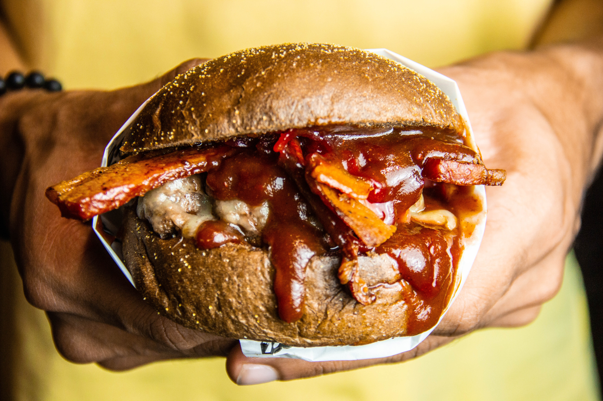

Hamburguesa casera

Ingredientes
- - 150gr de carne picada
- - 2 cebollas de verdeo (o 1 cebolla común)
- - 2 huevos (opcional)
- - 2 dientes de ajo
- - 1 cdita. de pimentón
- - 1 cda. de perejil picado
- - Sal (más o menos 2 cditas) y pimienta
Preparacion
- 1. ¡Es muy fácil!: lo primero es mezclar bien la carne picada
- 2. Una vez hecho esto, agregar las cebollas y el ajo bien picados, la sal, la pimienta, el pimentón y el perejil, también picado.
- 3. Una vez integrado esto, agregar los dos huevos y unir bien con las manos. Se le puede agregar pan rallado (media taza, no más). Pero a mí estas proporciones me dan muy bien y la carne queda justo como quiero. El huevo es opcional. Comunmente las hamburguesas no llevan huevo. A mí me gusta como queda.
- 4. Hacer las hamburguesas caseras. Pueden hacerse con molde. A mí me gustan hechas con la mano, que se vea que son caseras.
- 5. calentar una plancha o sartén (bien caliente), poner la hamburguesa y cuando esté de un lado, dar vuelta (dar vuelta una sola vez). Hasta que esté del otro.
Milanesa a caballo
Preparacion
- 1. Hervir arroz
- 2. En una sartén profunda poner un hilo de aceite y agregar los ajos picados y la cebolla picada, junto con los condimentos, sal, pimienta, cúrcuma, pimentón curry , todo lo que quieras. Revolver para que las especias no se quemen.
- 3. Cuando la cebolla vaya cambiando a transparente agregar el morrón picado, los champiñones y el tomate pelado.
- 4. Agregar el vino y cocinar unos minutos para que evapore y luego añadir la salsa de soja y una cucharadita de azúcar
- 5. Volcar el arroz al wok y mezclar.
Igredientes
- - 1 0 2 bifes o filetes grandecitos de ternera (nalga, bola lomo, peceto, cuadrada)
- - 2 dientes ajo
- - 1 cucharada perejil fresco picado
- - 200 g pan rallado
- - 2 huevos
- - 1 papa
- - 1 pizca pimienta
- - Sal a gusto
- - Aceite de oliva suave, cantidad necesaria para freír las milanesas, las patatas y los huevos
Carne al horno

Ingredientes
- - 1 colita de cuadril
- - 1 cabeza de ajo
- - Aceite de oliva
- - 1 papa
- - Sal y pimienta
- - Perejil
Preparacion
- 1. Se limpia bien la colita de cuadril tratando de no dejar ningún resto de grasa, se la mecha con la provenzal hecha del ajo y el perejil bien picado y se la coloca en una placa para horno con un poco de aceite, se salpimienta y se lleva a horno moderado a fuerte
- 2. Cuando la carne comienza a tomar color se la da vuelta y se colocan las papas trozadas medianas en la placa y se lleva nuevamente al horno.
- 3. Se sirve cuando las papas estén blandas y la carne bien cocida.